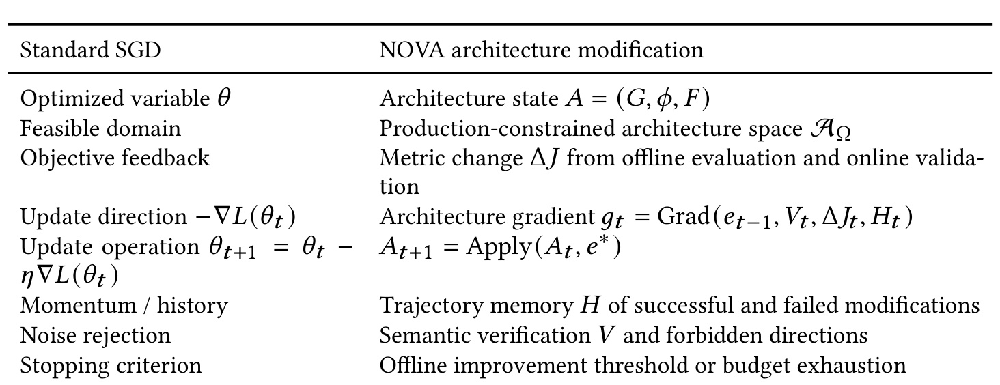
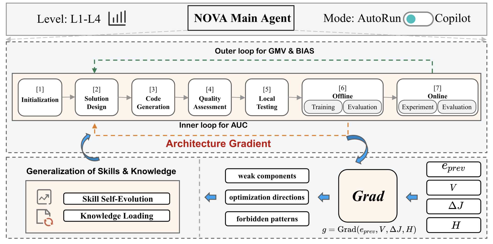
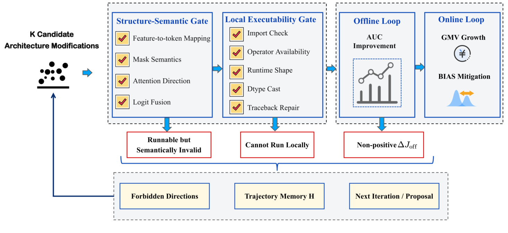
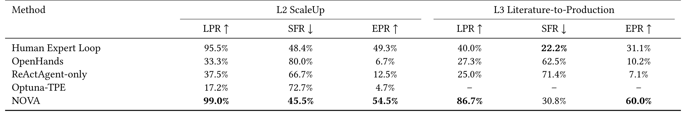
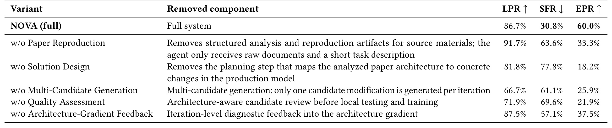
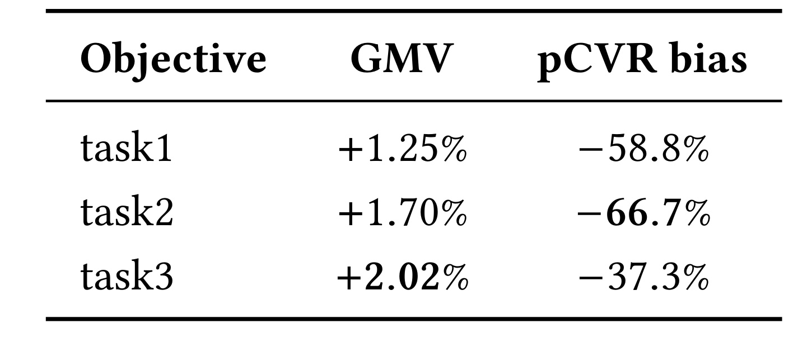
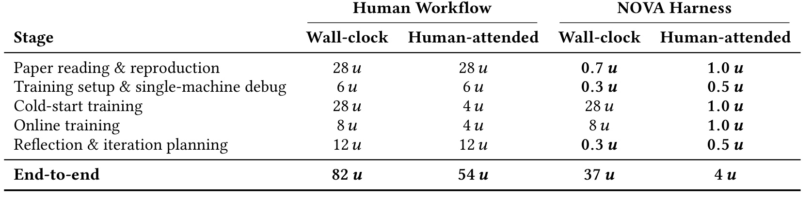

NOVA 这篇论文来自 Tencent Inc.，作者包括 Shaohua Liu、Liang Fang、Yilong Sun、Shudong Huang 等。论文入口为 arXiv:2606.27243，公开日期是 2026-06-25。它关注的不是通用代码生成，而是工业广告推荐模型里的架构演进：怎样让 agent 参与结构升级、候选验证、离线训练和线上 A/B，同时避免“代码能跑但推荐语义错了”的静默失败。公开材料中没有核验到独立代码仓库；论文给出了机制、表格、线上结果和部分 appendix 级复现线索，但生产数据、内部 prompt corpus 和绝对工程时间单位仍是不可公开部分。
工业广告推荐模型持续依赖架构升级获得质量和业务收益，但生产里的结构改造既需要专家经验，又要满足 shape、特征依赖、训练稳定性、serving 兼容和线上指标约束。AutoML 主要调局部超参，通用 coding agent 只证明代码可运行，仍可能生成通过本地测试却破坏推荐语义、降低 AUC 或 GMV 的候选。
1. 背景和问题
推荐系统的架构演进通常不是一次简单的“换层”或“调参”。论文把工业广告推荐的发展线索从 LR、FM、FFM 这类浅层特征交叉，讲到 Wide & Deep、DeepFM、DCN，再讲到 DIN、DIEN、SIM 这样的用户行为序列建模，以及 RankMixer、TokenMixer-Large、MixFormer 等更重的 token interaction 和 Transformer-style backbone。这个叙事的重点是：当手工特征工程和浅层结构的增益越来越难拿时，业务收益越来越依赖更复杂的交互模块、更强的行为序列建模和跨模块结构改造。对生产团队来说，这正是最耗专家时间、最难标准化、也最容易被“看起来能跑”的代码改坏的部分。
NOVA 对“架构演进”的定义比较宽。它不只包括 token_dim、token_count、layer_count 这样的结构超参，也包括新增或移除特征、调整 feature grouping，把 target attention 升级成 sequence token 与 non-sequence token 的联合交互，把 residual 模块替换成 AttentionRes，或者把 TokenMixer-Large、MixFormer 这类论文模块迁移进生产模型。这里的共同点是：修改单位已经跨越了模型图、特征配置、训练框架和线上推理路径。一个候选如果只满足 Python import、单机 shape 推断或局部单测，仍然可能删除 sequence masking、改错 logit fusion、破坏 feature-to-token mapping，最后表现为离线 AUC 下降、校准偏差变大或线上 GMV 受损。
论文把这种风险称为 silent failure。它最麻烦的地方在于“错误不是显式工程崩溃”：模型可以训练，可以导出，可以在本地跑通，甚至能通过一些普通代码检查，但推荐语义已经偏离原始设计。通用 coding agent 的目标往往是完成软件任务，指标是编译通过、测试通过、issue 修复；而生产推荐架构的目标是保持业务相关语义、训练/推理一致性和线上效果。两者之间有一段很长的验证链。NOVA 的问题意识就在这里：如果 agent 只是写代码，那么它会把大量错误留到离线训练甚至线上实验之后才暴露；如果 verification 只是最后一道 filter，那么失败经验也不会变成下一轮搜索的知识。
因此，NOVA 试图把架构生成、结构语义验证、离线指标反馈、线上业务验证和失败记忆放进同一个 harness。它不是要完全替代专家，而是把任务分级为 L1 到 L4：简单结构变量调整、受约束的 ScaleUp、论文到生产迁移、开放式创新。低风险且技能规格覆盖的任务进入 AutoRun；未覆盖或高风险的任务转入 Copilot 由人确认。这个设计比“全自动 agent”更保守，但也更贴近工业推荐系统：最重要的是减少无效候选和静默失败，而不是展示 agent 能连续写多少代码。
这篇论文值得放在推荐系统和 LLM agent 交叉位置读。对推荐系统工程来说，它把长期存在的“架构升级靠专家经验”问题改写成可审计的搜索和验证问题；对 agent 系统来说，它强调领域语义 gate 比通用执行反馈更重要。NOVA 的贡献不在某个新模型层本身，而在于定义了一个可迭代的架构修改闭环：每次失败都要进入 trajectory memory，每次验证诊断都要影响下一轮方向，每次离线正反馈才有资格进入线上验证。这个视角对广告排序、召回/粗排/精排链路、LLM4Rec 模块迁移和内部模型优化平台都很有参考价值。
2. 方法
2.1 架构状态、可行域和评价目标
NOVA 先把“推荐模型架构”形式化为一个离散且受约束的状态，而不是把它当成一段普通代码。论文写作中的核心对象可以压缩为：
符号解释：$G_t$ 是当前模型图，$\phi_t$ 是 token dimension、layer count 等结构超参，$F_t$ 是特征配置和 feature routing，$e_t$ 是一次候选架构修改。这个公式提醒读者，NOVA 的搜索单位不是单个超参，而是可能同时触达模型图、结构超参和特征配置的修改。生产代码库 $C$ 给出初始状态，论文来源 $P$ 和知识库 $KB$ 提供架构先验；候选必须在预算 $B$ 内被提出、验证和训练。
可行域由生产约束定义：
符号解释：$\Omega$ 包含接口兼容、tensor shape、dtype、feature availability、training framework、serving compatibility、latency、参数量和 FLOPs 等硬约束。也就是说，NOVA 不允许 agent 只按论文语义生成一个“概念上合理”的模块；这个模块还必须能嵌进现有生产链路。离线目标用 AUC 排序候选，线上目标用 GMV 与 Bias 的加权组合验证最终候选：
符号解释：$J_{\mathrm{offline}}$ 是离线 inner loop 的选择依据，$J_{\mathrm{online}}$ 是线上 outer loop 的最终验证；$w_i$ 是业务权重，Bias 这类越低越好的指标会以负向权重进入目标。这样设计的好处是把“代码能运行”降级为必要不充分条件，真正的选择依据仍然是推荐质量和业务指标。
2.2 Architecture gradient：把失败诊断变成下一轮方向
NOVA 最有辨识度的概念是 architecture gradient。它借用了 SGD 的语言，但论文反复强调这不是对离散架构状态求真实数学梯度，而是一个结构化更新信号：
符号解释：$e_{t-1}$ 是上一轮修改，$V_t$ 是验证诊断，$\Delta J_t$ 是离线或线上指标变化，$H_t$ 是历史 trajectory memory。$g_t$ 输出三类信息：哪些组件可能是瓶颈，下一步该探索哪些修改方向，哪些失败模式要作为 forbidden directions 避免。候选选择可以写成：
符号解释：$E$ 是候选修改空间，$e_t^*$ 是下一轮真正应用的修改。这个选择同时看 gradient alignment、历史成功/失败经验和可行域约束。NOVA 的关键不是让 LLM 一次生成最优架构，而是让每轮验证和指标反馈都改变下一轮搜索分布。如果某个候选在语义门失败，它不会只被丢弃，而会被抽象成 forbidden direction 写入 $H_t$，让后续提案少走同一条路。

Table 2 的价值在于把一个容易误解的概念放回工程语境。标准 SGD 优化的是连续变量 $\theta$，NOVA 优化的是架构状态 $A=(G,\phi,F)$；标准 SGD 的目标反馈来自 loss，NOVA 的目标反馈来自离线和线上指标；标准 SGD 的 momentum 对应 trajectory memory，噪声抑制对应 semantic verification 和 forbidden directions。也就是说，architecture gradient 是面向 agent harness 的控制信号，不是论文在声称推荐模型结构可以直接反向传播。这个类比还解释了为什么 NOVA 不满足于 post-hoc 过滤：如果验证只在最后否掉候选，它只能节省训练资源；如果验证结果进入 $g_t$，它就能改变后续候选分布，减少同类静默失败的重复出现。
2.3 Level-aware harness：七阶段闭环而不是单 agent 写代码
NOVA 的实现层是 Main Agent 加若干 specialized sub-agents 的 directed workflow。Stage 顺序是 Initialization、Solution Design、Code Generation、Quality Assessment、Local Testing、Offline Training & Evaluation、Online Experiment & Evaluation。Initialization 解析生产代码和上下文，Solution Design 把论文或业务需求转成候选结构方案，Code Generation 生成候选代码，Quality Assessment 做架构感知审查，Local Testing 做单机可执行检查，Offline Training 返回 AUC 与诊断，Online Experiment 才进入真实业务指标。下游 stage 可以消费多个上游输出，Main Agent 则维护 trajectory memory 和 architecture gradient。

Figure 1 把 NOVA 与普通 coding agent 区分得很清楚。图的上层先固定 L1-L4 level 和 AutoRun/Copilot mode，说明自动化边界由任务复杂度和技能覆盖共同决定；中层七个阶段显示候选不是直接从 prompt 到代码，而是要经过 solution design、quality assessment 和 local testing；下层把 verification diagnostics 与 metric feedback 接回 architecture gradient。离线 inner loop 用 AUC 探索候选，线上 outer loop 用 GMV 与 Bias 验证最终候选。对生产推荐平台来说，这种分层有两个实际意义：一是把专家审查保留在高风险处，二是把每轮试错变成可追踪的轨迹，而不是散落在代码 diff、训练日志和口头经验里。
2.4 Silent-failure-aware verification cascade
NOVA 的 verification cascade 由四层组成。第一层是 structure-semantic gate，检查 modification logic、shape/dtype、feature-to-token mapping、attention direction、mask semantics 和 logit fusion。第二层是 local testing gate，检查 import、operator availability、runtime shape、dtype cast、traceback repair 等本地可执行性。第三层是 offline inner loop，用 AUC 评估通过前两层的候选。第四层是 online outer loop，用 GMV growth 和 Bias mitigation 做生产验证。最关键的风险控制在第一层：很多候选不是不能跑，而是以错误语义跑通。

Figure 2 展示了为什么 NOVA 把 semantic gate 放在训练之前。左侧的 $K$ 个候选先进入 structure-semantic gate 和 local executability gate；如果它们是 runnable but semantically invalid、cannot run locally 或 non-positive $\Delta J_{\mathrm{off}}$，失败会被写入 forbidden directions 和 trajectory memory，再反向影响下一轮 proposal。这个流程的重点不是“多加几个测试”，而是把推荐系统里的结构语义写成可复用 gate：例如 causal mask 与 padding mask 是否组合正确、attention direction 是否泄漏未来信息、feature-to-token mapping 是否仍对应原业务特征、logit fusion 是否改变了目标含义。只有这些检查通过，AUC 和线上 GMV 才有讨论价值。
NOVA 也没有声称 semantic gate 可以判断业务有效性。它只负责提前拦截推荐语义错误和工程不可运行错误；一个结构上有效的候选仍然可能在离线或线上无效。论文的设计边界很清楚：semantic verification 是 gradient denoising，用来减少 false-positive directions；最终性能仍由 AUC 和 A/B 决定。这种边界意识值得保留，因为在推荐系统里，把“能解释为什么错”与“证明一定有效”混在一起，往往会导致 agent 自信过高。
3. 实验结果
3.1 主实验：L2 ScaleUp 与 L3 Literature-to-Production
实验围绕四个问题展开：NOVA 是否比 baseline 更容易找到 AUC-positive 的架构修改；各组件贡献如何；真实生产代码如何被修改；离线选出的候选是否能在生产 A/B 里改善 GMV 和 Bias。L2 ScaleUp 使用 production RankMixer-style backbone，搜索 token_cnt、token_dim、RankMixer layer 数等耦合结构超参，同时限制总模型规模在生产 baseline 的 ±10%。这个任务看似是调参，但 token_cnt 必须能被 token_dim 整除，且会影响 tokenization 和 interaction design，因此盲目 HPO 很容易生成无效配置。L3 Literature-to-Production 则把 TokenMixer-Large 迁移到同一生产 backbone，要求保留 feature pipeline、tensor shape、训练稳定性和推理兼容性。
评价指标分三类。Local Pass Rate 表示生成候选中通过本地可执行检查的比例，Silent Failure Rate 表示可运行但离线无正收益的候选比例，Effective Pass Rate 表示从生成候选到离线正收益的端到端成功率：
符号解释：$N_g$ 是生成候选数，$N_p$ 是通过本地测试的候选数，$N_+$ 是通过本地测试且 $\Delta \mathrm{AUC}>0.001$ 的候选数。这个定义很适合 NOVA 的问题意识：如果只看 LPR，通用 coding agent 可能看起来还行；如果加入 SFR，就能看出“可运行但无效”的候选占比。

Table 5 给出的对比很直接。L2 上，NOVA 的 LPR 是 99.0%，EPR 是 54.5%，明显高于 Human Expert Loop 的 49.3% EPR，也远高于 OpenHands、ReActAgent-only 和 Optuna-TPE。这里的关键不是人类专家差，而是自动系统可以稳定执行大量约束检查和历史方向复用；AutoML 只在预定义 switch space 里搜索，遇到结构耦合时 LPR 只有 17.2%。L3 上差距更大：NOVA 的 LPR 为 86.7%，SFR 为 30.8%，EPR 为 60.0%；Human Expert Loop 的 EPR 为 31.1%，OpenHands 和 ReActAgent-only 分别只有 10.2% 和 7.1%。这说明 literature-to-production 不只是读懂论文，还要把论文模块翻译成生产兼容结构，并在多轮中把失败诊断反馈给后续候选。
3.2 消融：哪些环节真的降低 silent failure
消融实验只在更难的 L3 场景上做，因为 TokenMixer-Large 到生产 backbone 的迁移最能检验 harness 的必要性。论文分别去掉 Paper Reproduction、Solution Design、Multi-Candidate Generation、Quality Assessment 和 Architecture-Gradient Feedback。这个设计比只做“有无 NOVA”更有价值，因为它能区分“多 agent 分工”“多候选生成”“验证反馈记忆”到底哪个环节在发挥作用。

Table 6 最值得注意的是 Solution Design 和 Quality Assessment。去掉 Solution Design 后，LPR 仍有 81.8%，但 SFR 升到 77.8%，EPR 只剩 18.2%；这意味着没有显式方案设计时，系统仍能写出可运行代码，却很难保持论文架构意图和生产 backbone 的正确映射。去掉 Quality Assessment 后 EPR 为 21.9%，说明多候选生成如果缺少架构感知审查，也可能把风险候选送进训练。去掉 Architecture-Gradient Feedback 时 LPR 还有 87.5%，但 SFR 升到 57.1%，EPR 降到 37.5%；这证明观察到失败并不等于学到失败，只有把诊断抽象成 forbidden direction，后续搜索才会减少重复错误。
Paper Reproduction 的消融也有启发。去掉结构化论文分析后，LPR 反而达到 91.7%，但 SFR 升到 63.6%，EPR 降到 33.3%。这说明浅层理解论文更容易产生“看起来合理、实现也能跑”的候选，可是这些候选不一定保留原论文的结构动机。Multi-Candidate Generation 的消融则说明单候选路径太脆弱：一旦第一条 adaptation path 偏了，系统没有替代实现可比较。整体看，NOVA 的收益来自两个方向同时改善：一方面提高 LPR，减少工程或语义不可行候选；另一方面降低 SFR，减少可运行但无收益的候选。
3.3 生产代码案例与线上 A/B
论文的 RQ3 用两个 TokenMixer-Large 迁移案例说明 NOVA 如何修改真实生产代码。第一个案例是参数高效变体：直接照搬论文会使用四个 TokenMixer blocks、inter-residual connections 和 auxiliary loss；NOVA 最终发现两块 TokenMixer 的轻量版本，用约 43% dense parameters 达到可比离线效果。这个候选减少 block 数、缩窄 FFN expansion ratio，并在 standard mixing/reverting 结构之外增加 norm + FFN + residual path。它保留了 token interaction 意图，但更适配生产 backbone 的 capacity 和 latency。
第二个案例更能体现 architecture gradient。初始迁移整体有正信号，但 task1 未达到预期；NOVA 尝试移除 auxiliary loss，结果 task2 和 task3 受损，说明 auxiliary supervision 对部分目标仍有价值；随后它以更小权重重新引入辅助损失并添加 task1-specific auxiliary signal。进一步诊断发现 task1 auxiliary loss 可能读错目标表示，global auxiliary objective 也可能干扰 task3，于是下一轮修正 task1 auxiliary-loss index，并对 task3 做 mask。更激进的 target-specific branch 反而产生负结果，NOVA 又回退到较好的轨迹并降低 task1 权重。这个过程不像一次性代码生成，更像有失败记忆的结构搜索。

Table 7 是线上验证的核心证据。离线 AUC 最优的 L3 candidate 被部署到生产 pCVR model，并以 5% production traffic、request-level randomization 做标准 A/B。三个 pCVR 目标上的 GMV 分别提升 +1.25%、+1.70%、+2.02%；同时 pCVR bias 分别下降 58.8%、66.7%、37.3%。这组结果支持两点：第一，NOVA 不是只优化离线 AUC 的实验系统，至少有一个被选候选能带来线上业务正收益；第二，GMV 提升没有伴随校准恶化，bias 下降反而说明候选改善了预测偏差。不过，论文没有公开 A/B 窗口长度、流量分层细节和显著性检验阈值，因此这些结果应作为生产证据阅读，而不是可独立复算的公开 benchmark。
3.4 工程效率和 appendix 复现线索
Appendix 补充了两个工程层信息。Table 8 报告了 NOVA harness 的 prompt + skill bundle size、每次调用 token、tool calls 和每任务 token usage。Solution-Design agent 约 110KB，上下文最重；Quality-Review agent 的 tool calls 最多；Main Agent 不直接调用 LLM，只负责控制循环。这说明 NOVA 的成本并不低，它把昂贵上下文集中在 solution design 和 dense multi-candidate checking 上。这个代价与论文目标一致：用更多结构化验证和历史复用，换取更少无效训练和更少专家 attended time。

Table 9 把效率收益拆成 stage。论文用抽象工程小时单位 $u$ 隐藏绝对值，但保留比例：传统 human workflow 的端到端 wall-clock 是 82u，NOVA 是 37u，约 2.2x；human-attended time 从 54u 降到 4u，约 13.5x。注意两行训练阶段的 wall-clock 并没有变快，cold-start training 仍是 28u，online training 仍是 8u；节省主要来自论文阅读与复现、单机 debug、reflection 与 iteration planning 等人力密集阶段。这个表避免了一个常见误解：NOVA 不是让 GPU 训练更快，而是减少专家在设计、调试、监控和复盘中的阻塞时间，使同样 headcount 下能支持更多实验吞吐。
复现方面，论文只公开机制级 artifacts，而不释放生产 prompt corpus。它给出 Solution-Design prompt skeleton、一个 causal-mask 失败规则和 trajectory snippet，以及 Paper-to-Code、Architecture-Edit Planner、Multi-LLM Code Review 三类 skill summary。这里最有价值的是 forbidden rule 的例子：第 7 轮提出“bidirectional self-attention over behavior sequence”时，semantic gate 发现缺少 causal mask，会泄漏未来信息，于是写入 forbidden rule；第 8 轮 Grad 读取该规则，把方向改成 target-aware self-attention with an upper-triangular causal mask，并通过 semantic 与 local gate。这个例子把“失败记忆如何改变下一轮 proposal”讲得比公式更具体。
4. 总结
我对 NOVA 的判断是：它把推荐系统架构演进从“专家凭经验试结构”推向“可审计的 agent harness”，但它的价值更偏工程治理和迭代流程，而不是提出一个可直接复现的新推荐模型。最强的地方有三点。第一，论文明确区分 runnable code 与 valid recommender architecture，抓住了通用 coding agent 在生产推荐里最容易被高估的盲区。第二，architecture gradient 把验证诊断、指标变化和历史轨迹合并成下一轮方向，使失败不只是日志，而是搜索约束。第三，实验同时报告 LPR、SFR、EPR 和线上 GMV/Bias，评价口径比只看通过率或只看 AUC 更接近真实上线链路。
局限也很明显。其一，生产数据、代码库、skill specifications、prompt corpus 和业务权重都不可公开，外部读者很难复现实验，只能复现机制。其二，线上 A/B 结果虽然给出 5% traffic 和显著性说明，但缺少窗口长度、分层策略、置信区间和长期稳定性。其三，NOVA 对高质量 skill rules、历史知识库和工程平台依赖很强；如果一个团队没有长期积累的架构约束、训练日志和失败模式，直接部署同类 harness 的收益会打折。其四，architecture gradient 仍是 LLM/规则驱动的结构化反馈，不是形式化优化保证，错误诊断也可能把探索空间过早收窄。
工程上可以跟进三条线。第一，把 NOVA 的 semantic gate 思想拆到现有推荐开发流程里，先为 mask、feature routing、logit fusion、serving schema、training/inference consistency 建立小而硬的检查规则，不必一开始就做完整 agent harness。第二，复盘内部历史实验时，不只记录 AUC/GMV 结果，还要把失败候选抽象成 forbidden directions，例如“某类 sequence attention 缺少 causal mask 会泄漏未来信息”“某类 auxiliary loss 会干扰特定目标”。第三，在 LLM4Rec 或论文模块迁移场景中，把 Paper Reproduction 和 Solution Design 明确分开：先读出论文真正的结构意图，再映射到生产 backbone，而不是让 agent 直接从 PDF 摘要写 diff。
后续阅读可以继续看三类论文。第一类是 self-evolving recommender systems 和 AgenticRecTune，比较不同 agent 系统如何定义候选、验证和线上反馈。第二类是 TokenMixer-Large、RankMixer、MixFormer、OneTrans 等工业推荐 backbone，因为 NOVA 的 L3 案例围绕这些模块迁移展开。第三类是 TextGrad、ProTeGi 和通用 coding agent 论文，用来对照“文本反馈作为梯度”和“软件任务通过率”为什么在推荐架构演进里不够。读 NOVA 时要保持一个保守结论：它证明了验证感知 agent harness 在腾讯广告推荐生产环境中有正向证据，但外部团队真正能迁移的是闭环设计、语义 gate 和失败记忆机制，而不是具体数值本身。